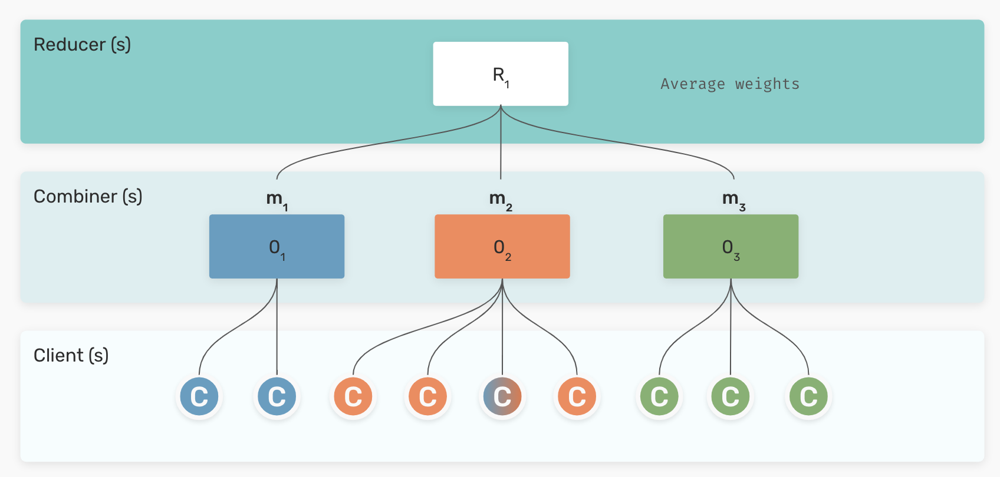
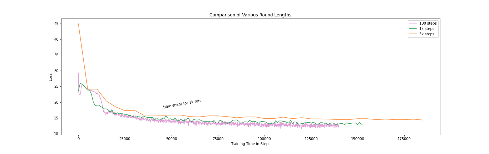
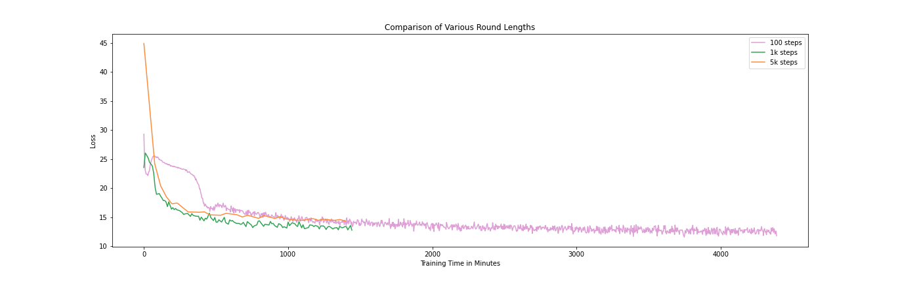
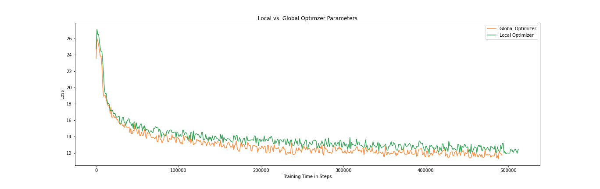
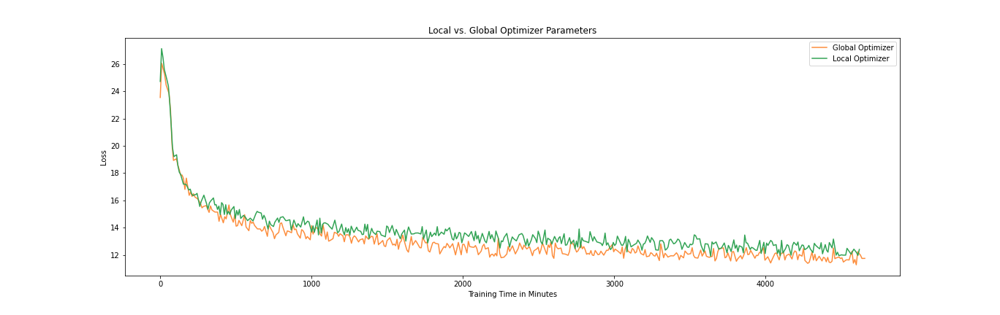

We trained a bilingual Swedish-Norwegian ELECTRA language model in a federated setup, showcasing LM training when various corpora cannot be shared directly. The main goal of the project was to validate the feasibility of the approch, as well as to study some key numerical properties affecting the performance of the FL process.
Large transformer-based language models (LMs) have come to dominate the state-of-the-art for many natural language processing (NLP) tasks. These models, such as BERT and GPT, require both large amounts of compute as well as large amounts of textual data. Large tech companies that have been the driving force in the development of these large and steadily growing LMs, scrape the internet to gather huge text corpora for many different genres. These datasets however come with some problems. Languages that are less common on the internet will be underrepresented and the automatic classification of which language the text is actually in is not necessarily very accurate either. Due to the size of the data, manual checking is not feasible. Including any type of text scraped from the internet without checking its content, will also include texts with undesirable views of racist, sexist, or similar nature that can induce certain biases into the final model. The National Library of Sweden (Kungliga Biblioteket – KB) has access to vast amounts of digitized newspapers and other texts in Swedish, that we used to train a state-of-the-art Swedish BERT language model. In contrast to text scraped from the internet, our dataset is much more controlled. For that reason it is a valuable asset for research on language modeling, but due to the copyright of the original owners of the individual texts we are not able to directly share the data with external parties in the research community.
In order to allow others to train new models with their own private and our private data, we are here exploring the use of federated machine learning (FL). FL is a recent strategy that allows the training of models without directly sharing or disclosing the data. Simply speaking, the data never leaves the administrative control of the data provider, instead local model updates are computed and combined to form a global, federated model.
Such a FL setup would allow multiple national libraries and other maintainers of private data, to collaborate in training multilingual LMs without having to sort out potential legal problems, as no data is shared. We collaborate with Scaleout and use their open-source FL framework FEDn to train a Swedish-Norwegian ELECTRA language model.
You can read more about this project at KBLab, Scaleout, and AI Sweden.
ELECTRA is a transformer-based masked language model (MLM) similar to its predecessor BERT. In contrast to classical LMs, now often referred to as causal language models (CLMs), that are trained by predicting the next token in a sequence, an MLM is trained by reconstructing the original sequence given a corrupted input sequence. In the original BERT model this is done by randomly masking out 15% of the input:
Input: The
[MASK]sat on the mat.Output: The cat sat on the mat.
By learning to predict missing tokens, the model learns to imitate not only the structure of language in form of fitting syntax, but also which words and phrases have similar meaning by the contexts they have been used in the dataset.
Given that only 15% of the input tokens are masked and thus used for training the model, this approach is somewhat inefficient. While the network structure of ELECTRA is essentially the same as BERT’s, its training objective promises to be more sample-efficient. Instead of training to predict some masked out tokens, ELECTRA learns to predict for each token whether it belongs to the original input sequence or if it was generated by a secondary model. This secondary model, the generator, is trained in tandem with the primary model, the discriminator, quite similar to generative adversarial networks (GANs).
Input: The dog sat on the mat.
Output: ✔️ ❌ ✔️ ✔️ ✔️ ✔️
With this new objective ELECTRA is able to outperform BERT, essentially applying the MLM objective to every input token.
Federated learning is a technique used when a model needs to be trained on multiple datasets that cannot be pooled. There are two general use-case scenarios for FL: Cross-silo and cross-device.
Cross-device is a scenario where there are too many small devices, such as mobile or edge devices, that provide a constant stream of outputs. In contrast to this, cross-silo involves few, more powerful machines that handle datasets that cannot be shared due to privacy concerns or legal restrictions.

Figure 2: Schema for the hierarchical federated learning architecture implemented in FEDn.
The FL framework FEDn is designed to support scalable FL using a tiered, hierarchical architecture. It is based on services taking four principal roles: i) controller, ii) reducer, iii) combiner, and iv) client. At the lowest level of this hierarchical structure, local models with local data are trained on multiple geographically distributed client nodes. These local models are then, after a certain number of training updates, sent to one or more combiners that coordinate the updates from their own subset of clients. These partial model updates are then reduced into a single global model and redistributed to clients for the next training round, according to a reducer protocol (currently all-reduce). Finally, the controller’s responsibility is to coordinate the overall computation and to maintain the immutable trail of global models.
The update scheme used to combine the local models into one global model is called federated averaging (FedAvg), one of the most widely used methods for FL. In each round the current version of the global model is distributed to the clients that continue training using each their own data. After one local round of training the distributed clients’ model-weights are sent back to the server that simply averages the weights, while taking the number of local updates into account.
With the future goal to train a large Scandinavian transformer-based language model, we downscale the size of the model and data to be able to efficiently test different hyper-parameter settings. We choose to train a small ELECTRA model using publicly available data from the OSCAR corpus and Wikipedia, for Swedish, and Norwegian bokmål and nynorsk. The Swedish corpus is 27 GB, about five times larger than the Norwegian corpus. This uneven distribution allows us to additionally investigate whether an LM built on little data can benefit from a similar language’s data.
Due to the rather small size of the ELECTRA model, we are able to train using standard workstation GPUs. Our federated setup consists of three workstations plugged into the same network, two of which serving as local clients, doing the majority of computational work training the local model instances on GPU, and one workstation taking care of collecting, averaging, and redistributing the models.
Training large-scale transformer-based language models heavily relies on the correct choice of hyper-parameters, for the model as well as the optimizer. We follow the settings of the original small ELECTRA models in English, and focus only on choosing the correct federated learning strategy.
In order to obtain good FL performance, we need to balance communication overhead and convergence. This entails doing as many local model updates (i.e. gradient steps) as possible (more update steps means fewer global rounds), without letting the local models diverge from one another too far (large divergence before aggregation leads to lower convergence rate). For example, updating after 100 gradient steps will keep divergence to a minimum and require fewer gradient steps in total to converge, but will, due the communication overhead in global rounds, need much longer actual wall-time to reach a certain accuracy level, compared to models communicating their updates after every 1000 local gradient steps. On the other hand, taking too many local gradient steps will manage to do more gradient steps in a shorter amount of time, but need many more updates and thus time to reach convergence.
With FedAvg we typically only consider model parameters, but large transformer neural networks generally need more advanced optimization methods than simple stochastic gradient descent. In most cases the Adam (Adaptive Moment Estimation) optimizer is used, which computes adaptive learning rates for each parameter, storing both the mean and the variance of the gradients. These additional parameters depend on the model parameters, meaning that they should be averaged as well and redistributed to the clients. This however increases the size of the data package that has to be sent by a factor of three, which can be significant when larger models are trained that “weigh” multiple gigabytes. We test how the development of the loss is affected by keeping the optimizer specific parameters local versus averaging them the same way as regular model parameters.
To evaluate the impact of changing various hyper-parameters, we focus on the development of the loss function during training. While it seems easy to evaluate large language models, as one can simply use the GLUE or SuperGLUE benchmarks to get an overall performance evaluation, there are many tricks one needs to apply to gain better scores. Even simply changing the random seed can increase or decrease performance by multiple points.
While we do not evaluate downstream model performance, we clearly see how the training is affected.
In our first set of experiments we investigate how various local round lengths affect the training progress. We try four different local round lengths, with 100, 1000, 2000, and 5000 gradient steps before recombining the models.

Figure 3: Loss plotted over the number of gradient updates for three runs with round times set to 100, 1000, and 5000 steps.
While the loss decreases the most per steps taken when the model is updated as often as possible (i.e. 100 steps), it takes far longer than in the other setups to reach the same loss values. Increasing the local round length to 5000 gradient steps allows us to do the most gradient steps in the shortest amount of time, but results in the loss not decreasing as quickly as with for example 1000 steps per round.

Figure 4: Loss plotted over real-time minutes for three runs with round times set to 100, 1000, and 5000 steps.
In this scenario we finally settle for 1000 steps per round, giving us the best speed-performance trade-off. With real-world models being much larger than the one used in our experiments, it could be interesting to change the round length during training. Longer round length in the beginning allows the model to see more data, while shorter round lengths towards the end will help the model to converge.
Using a more advanced optimizer such as Adam is necessary when training models with parameters now regularly surpassing multiple billions. This unfortunately means that the number of parameters that we need to federate triples, which increases the communication overhead. In order to test whether it is enough to only federate the model parameters themselves while keeping the optimizer states local, we train our small ELECTRA model with the additional Adam parameters retaining their local states, and averaging them just as the regular model parameters.

Figure 5: Loss plotted over the number of gradient updates for two runs with a global and a local optimizer.
We can see that averaging the optimization-specific parameters allows the loss to decrease further, without taking much more time. While keeping the optimization parameters local increases the speed a little bit (the green curve in the figure above is slightly longer), it is not enough to counteract the decrease in learning.

Figure 6: Loss plotted over real-time minutes for two runs with a global and a local optimizer.
These results show that keeping outdated optimization parameters to increase the overall speed is not desirable. For larger models we might see a significant increase in speed, but it might then be a better idea to change the optimization algorithm to regular stochastic gradient descent, to avoid faulty inputs. Similarly to dynamically changing the round lengths, adding a smarter optimization algorithm towards the end can be a possibility.
This project has given us some promising first results towards training large language models such as ELECTRA. Using a federated black-box approach as implemented in FEDn, gives us the possibility to train models with other non-public data holders, but also gives others the possibility to train their models with our data.
The models we trained are however only of one type and relatively small. We are working on implementing an interface to the 🤗 Transformers library, that will allow users to train LMs from scratch in a federated fashion, but also fine-tune these models using the same functionalities. We hope that training models larger than our small ELECTRA, will give us more insights into how long we should train locally and whether to change the optimization strategy.
With these pieces in place, we finally hope to train a large Scandinavian language model that combines data sources that so far could not have been combined.